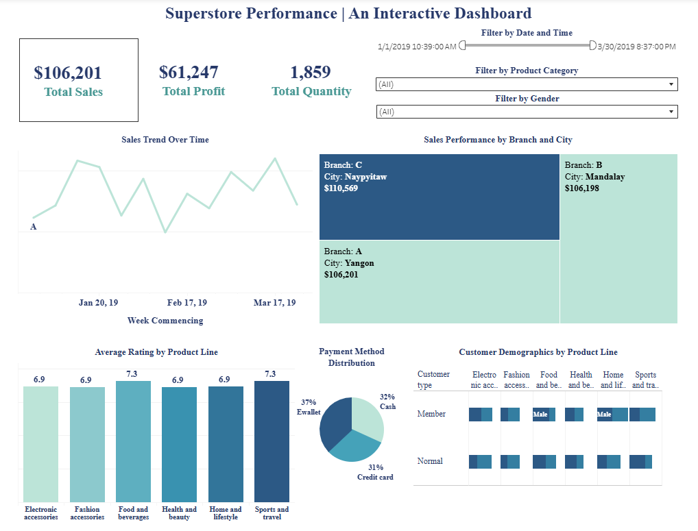

Tableau dashboard analyzing retail KPIs for executive insights.
A professional Tableau dashboard developed to help stakeholders understand key retail metrics across regions, categories, and customer segments. It provides actionable insights for improving sales strategy, shipping efficiency, and profitability.
• Filters for category, shipping date, segment, and gender
• Combined visuals: bar chart, line chart, heatmap, and matrix
• Interactive layout with hover-activated tooltips and dynamic filtering
• Regional profit and loss mapping with segmentation drill-downs
Tableau, Excel, Superstore Dataset
• Crafting a dashboard that communicates both high-level KPIs and detailed segmentation
• Handling the visual weight of multiple filters and chart types
• Maintaining responsiveness and layout clarity across components
This project improved my dashboard storytelling skills and strengthened my ability to visualize multi-dimensional business data for decision-makers. I also enhanced my proficiency in Tableau's filter actions and formatting tools.

Figure 1. Tableau visualization showcasing total sales, profit, quantity, branch performance, product ratings, customer demographics, and payment preferences.
View Dashboard on Tableau Public